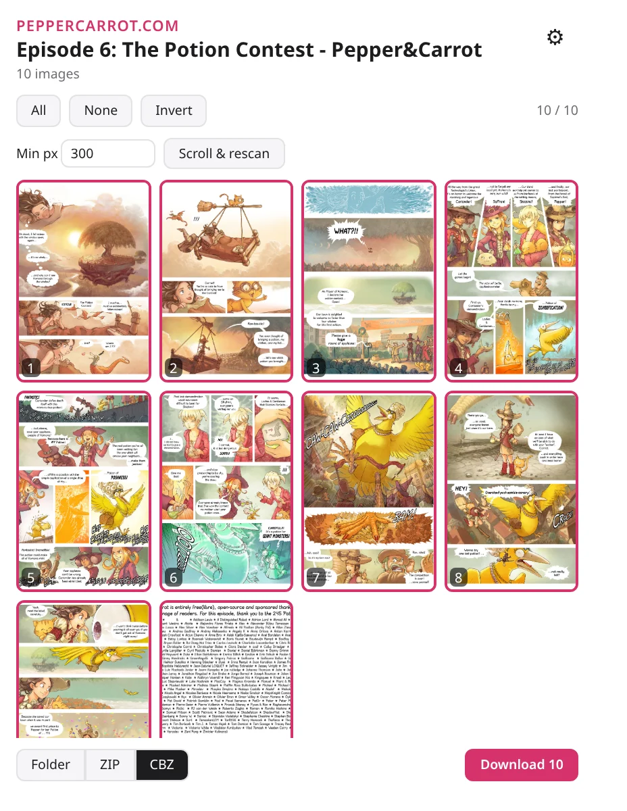

Save manga chapters as CBZ.
A small browser extension for Firefox, Floorp and Chrome. Pick the pages, download, and read them in your favorite reader.

Made for chapters
MangaDex is built in. On most other sites, mangashelf picks out the chapter's pages for you.
Supported sitesReady for your reader
CBZ files carry the series, chapter and reading direction, so your reader sorts them right.
Recommended readersOut of your way
Downloads keep going after you close the popup, retry failed pages, and stay private in private windows.